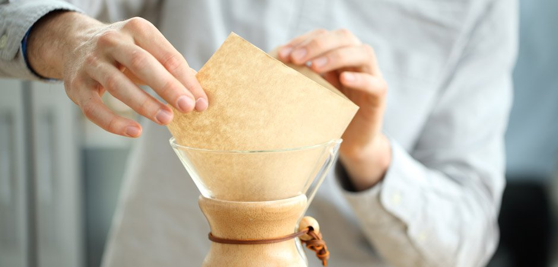
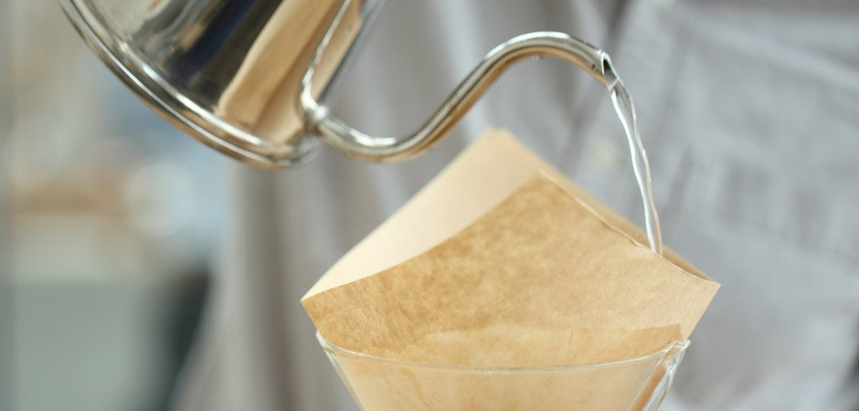
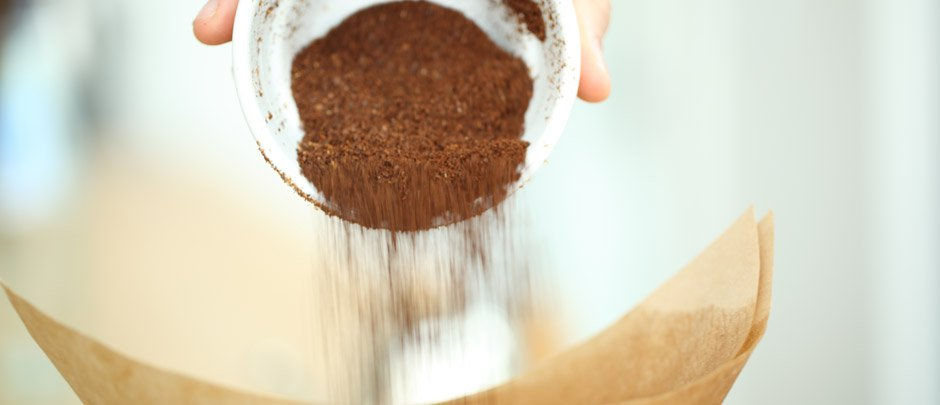
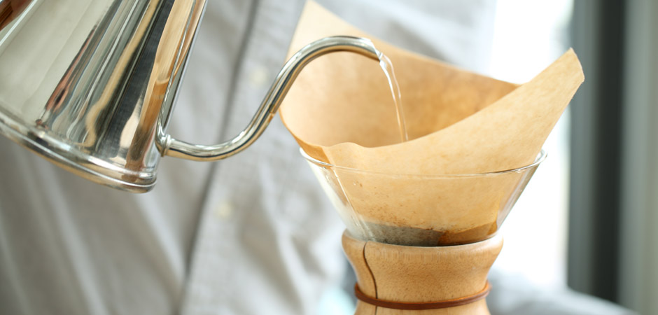
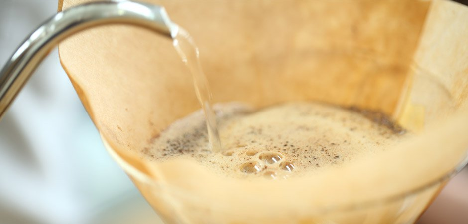
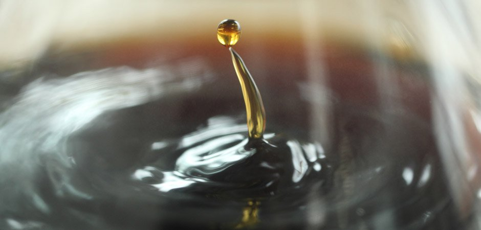

Step 1
Note: The amount of coffee and water varies depending on the type of coffee you are brewing and your preferred strength. As a starting point, we recommend using 50 grams of coffee and 700 grams of water (about 25 ounces), and then adjust according to your taste.
Weigh out the coffee and grind to a coarseness resembling sea salt.
Step 2
Unfold your filter and place it in your Chemex, ensuring that the triple-fold portion is facing the pour spout and lays across without obstructing it.

Step 3
Fully saturate the filter and warm the vessel with hot water. Discard this water through the pour spout.

Step 4
Pour your ground coffee into the filter and give it a gentle shake. This will flatten the bed, allowing for a more-even pour.

Step 5
There will be four pours total, and this is the first.
Starting at the bed’s center, gently pour twice the amount of water that you have coffee into your grounds (for example, 50 grams of water if you have 25 grams of coffee). Work your way gently outward, and avoid pouring down the sides of the filter. You’ll notice that adding this amount of water causes the coffee to expand, or "bloom." Allow it to do so for 45-55 seconds. A solid bloom ensures even saturation.

Step 6
Pour water in a circular pattern starting in the center. Spiral out toward the edge of the slurry before spiraling back toward the middle. Avoid pouring on the filter. Allow the water to drip through the grounds until the slurry drops 1 inch from the bottom of the filter. You should use about 200 grams of water for this pour.

Step 7
Repeat the same pour pattern as in Step 6, adding water in 200-gram increments. Repeat once more, allowing the water to percolate through the grounds until the slurry drops 1 inch from the bottom of the filter before beginning the next pour.
Step 8
Allow the water to drip through the grounds entirely.

Step 9
The brew should have taken between 3.5-4.5 minutes. If the brew was too fast, consider using a finer grind or a slower pour rate next time. If the brew was too slow, consider using a coarser grind or a faster pour rate.